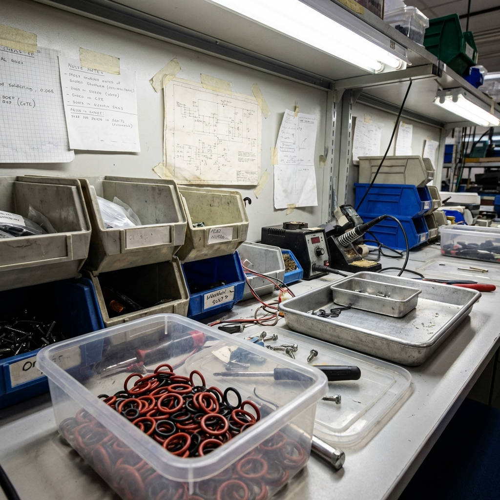
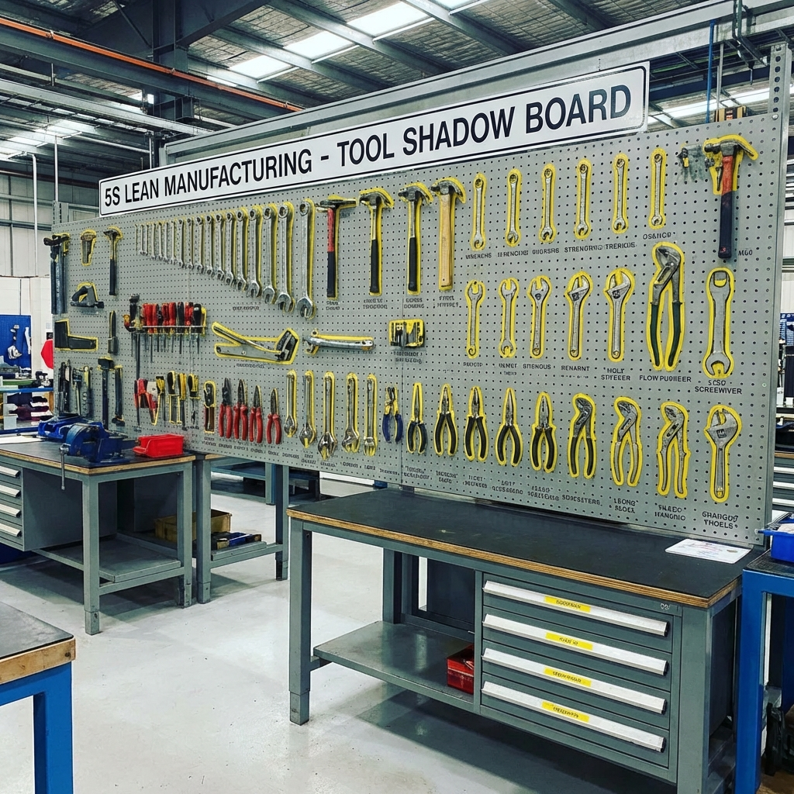
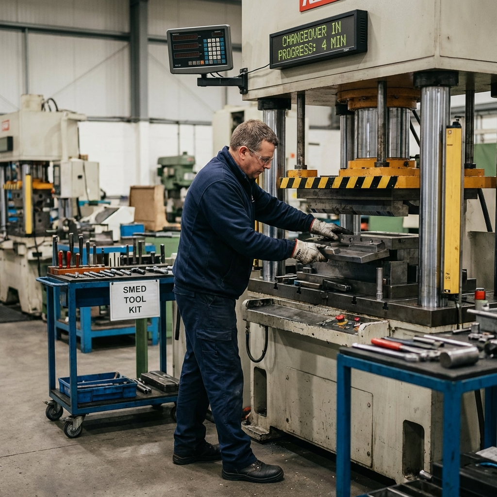

Kai (Changement) + Zen (Bon)
Pôle Formation UIMM-CVDL
KAIZEN
L'Amélioration Continue
JdR n°6
Les 3 Ennemis (Muda)
- Muda : Gaspillages (Transport, attente, stock...)
- Mura : Irrégularité (Pics de production)
- Muri : Surcharge (Des hommes ou des machines)
Le Problème : Poste Désorganisé

Perte de temps à chercher les outils !
Solution : Shadow Board

Chaque outil à sa place → Gain de temps !
Le Changement de Série

Objectif : Réduire le temps de 50% avec SMED !
Outil : SMED
Single Minute Exchange of Die
Réduire le temps de changement de série.
Interne : Machine à l'arrêt (On ne peut pas faire autrement).
Externe : Machine en marche (Préparation en temps masqué).
Objectif : Transformer l'Interne en Externe !
Autres Outils Kaizen
- Diagramme Spaghetti : Tracer les déplacements pour voir les allers-retours inutiles.
- 5S : Débarrasser, Ranger, Nettoyer, Standardiser, Respecter.
- Chronométrage : Mesurer pour améliorer.